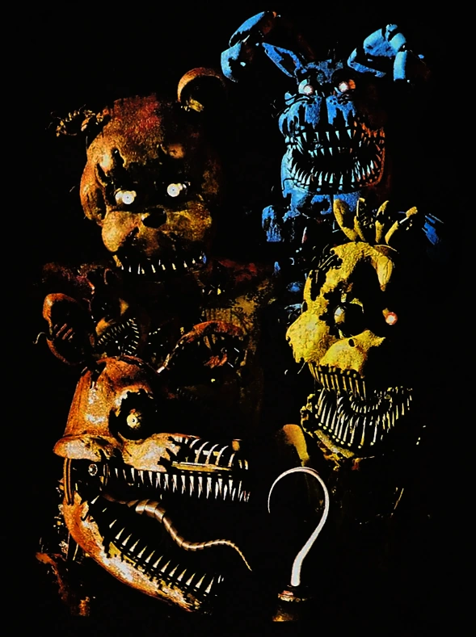
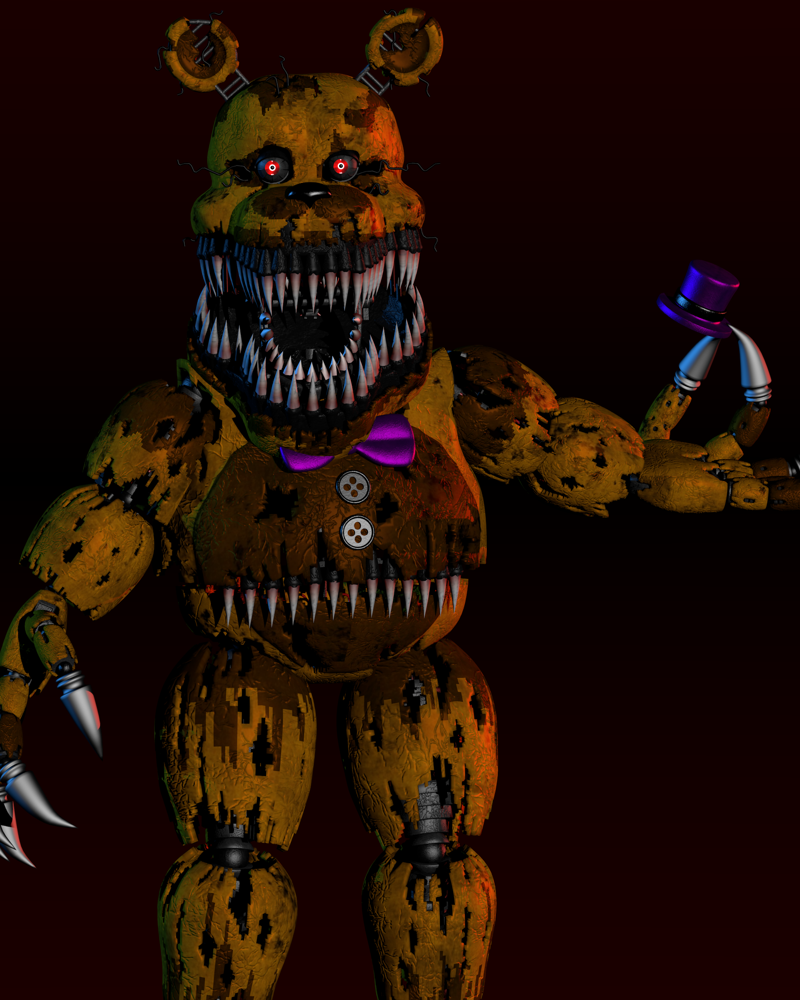
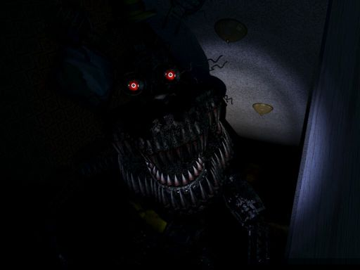

Nightmare Animatronics

The Nightmare Animatronics are a group of terrifying and twisted animatronic characters that serve as the primary antagonists in "Five Nights at Freddy's 4." These nightmarish versions of Freddy Fazbear and his friends are the stuff of childhood nightmares. Here's a description of each of the Nightmare Animatronics:
Nightmare Freddy: Nightmare Freddy is a grotesque version of the original Freddy Fazbear. He is covered in sharp, nightmarish teeth and features multiple heads that emerge from his torso. These smaller heads can become active and attack the player independently. Nightmare Freddy is the leader of the Nightmare Animatronics.
Nightmare Bonnie: Nightmare Bonnie is a horrific rendition of Bonnie the Bunny. His face is distorted and twisted, with a gaping maw filled with teeth. Nightmare Bonnie is known for his aggressive behavior and ability to jump-scare the player.
Nightmare Chica: Nightmare Chica is a horrifying version of Chica the Chicken. She has a distorted, tooth-filled beak, sharp claws, and a disturbing appearance. Nightmare Chica is known for her unpredictable movements and unsettling presence.
Nightmare Foxy: Nightmare Foxy is a nightmarish incarnation of Foxy the Pirate Fox. He has a skeletal, withered appearance, with sharp metal parts protruding from his body. Nightmare Foxy is particularly aggressive and can rush at the player suddenly.
Behavior: The Nightmare Animatronics are relentless and aggressive, making them formidable adversaries. The gameplay in "Five Nights at Freddy's 4" centers around fending off these animatronics while in the protagonist's bedroom. Players must listen carefully for audio cues and use a flashlight to deter the Nightmares from getting too close. The animatronics become progressively more challenging to deal with as the nights go on.
The Nightmare Animatronics contribute to the intense and terrifying atmosphere of FNAF 4, providing players with a heart-pounding and suspenseful experience as they try to survive the nightmarish onslaught.
Nightmare Fredbear

Nightmare Fredbear is a prominent character in "Five Nights at Freddy's 4" and serves as one of the main antagonists in the game. Here's a detailed description of Nightmare Fredbear:
Appearance: Nightmare Fredbear is a nightmarish version of the original Fredbear animatronic, who is associated with the restaurant where the infamous 'Bite of '83' incident occurred. He has a menacing and terrifying appearance, designed to evoke fear. Some key features of Nightmare Fredbear include:
Large Grin: Nightmare Fredbear has a massive, ghastly grin filled with sharp, yellow teeth. His grin is one of his most unsettling features, and it stretches almost from ear to ear.
Hat and Bowtie: Like the original Fredbear, Nightmare Fredbear wears a black top hat and a matching bowtie, but they appear more sinister and worn in this nightmarish form.
Purple Hatband: Unlike the original Fredbear, Nightmare Fredbear has a purple hatband, which is significant in the game's lore.
Tattered Appearance: Nightmare Fredbear's body is decayed and tattered, with visible wear and tear. He has exposed endoskeleton parts and sharp, metallic claws.
Role in the Game: Nightmare Fredbear is a central character in "Five Nights at Freddy's 4" and plays a key role in the story. He is heavily associated with the traumatic 'Bite of '83' incident, where a child was bitten by an animatronic during a birthday party. Nightmare Fredbear's appearances in the game are tied to the player character's fears and memories of this incident.
Behavior: In gameplay, Nightmare Fredbear is highly aggressive and relentless. He can suddenly appear in the bedroom, and his movements become more unpredictable as the nights progress. Players must listen for audio cues and use their flashlight to ward him off and survive the night.
Nightmare Fredbear's character design and behavior contribute to the intense and horrifying atmosphere of "Five Nights at Freddy's 4," making him one of the most iconic and fear-inducing animatronics in the game.
Nightmare

"The Nightmare" is a menacing and formidable character in "Five Nights at Freddy's 4." It is not a specific animatronic but rather represents the collective fear and nightmarish manifestations that haunt the game's protagonist throughout the nights. Here's a description of "The Nightmare":
Collective Fear: In "Five Nights at Freddy's 4," "The Nightmare" is not a single animatronic but rather a manifestation of the protagonist's deepest fears and anxieties. It represents the terrifying animatronics from Freddy Fazbear's Pizza and the lingering trauma associated with the restaurant's dark history.
Nightmarish Forms: "The Nightmare" takes on different nightmarish forms throughout the game, embodying the fear of the animatronics. These forms include twisted and monstrous versions of Freddy Fazbear, Bonnie, Chica, Foxy, and Fredbear himself. Each form is grotesque and terrifying, with sharp teeth, distorted features, and a menacing demeanor.
Behavior: While "The Nightmare" doesn't have a fixed form, its behavior is consistently aggressive and relentless. It lurks in the shadows of the protagonist's bedroom and can suddenly appear in the player's field of view. Players must use their flashlight and listen for audio cues to fend off "The Nightmare" and survive until the morning.
"The Nightmare" is a thematic element of "Five Nights at Freddy's 4," representing the fear and trauma that the protagonist is experiencing. Its ever-changing forms and relentless pursuit create a nightmarish atmosphere, adding to the horror and tension of the game.